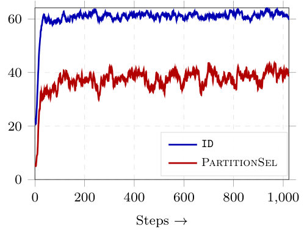
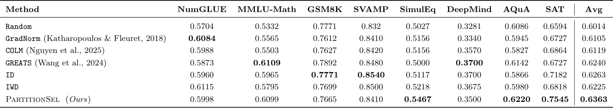
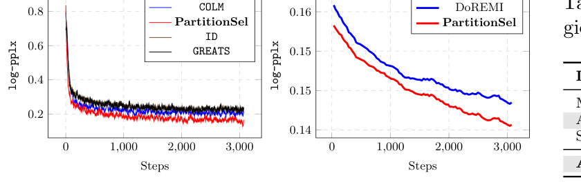
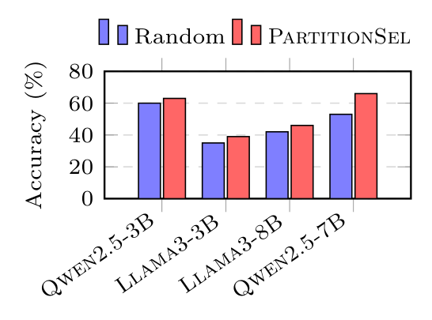
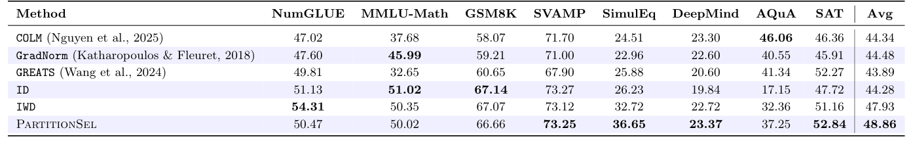
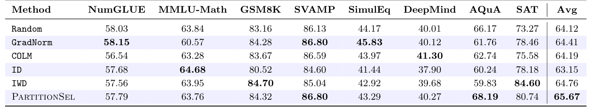
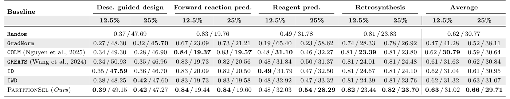
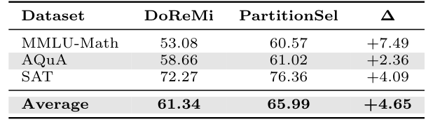
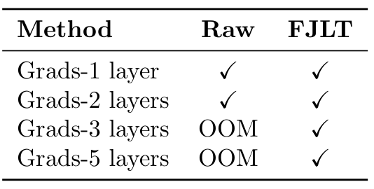
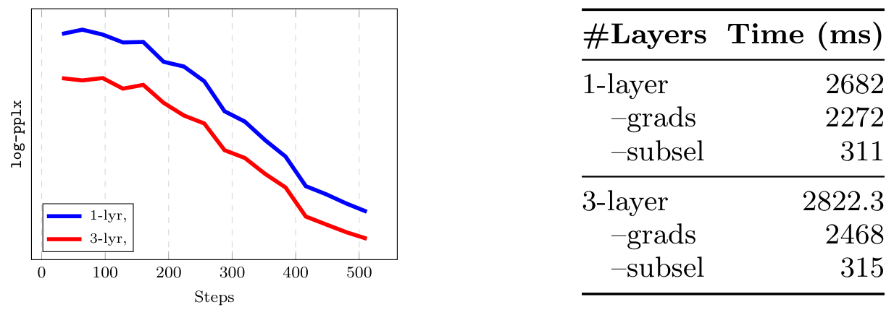

Choosing a Minibatch Across Data Domains
- When a minibatch mixes several domains (math, code, chemistry, …), you want it to cover each domain and to avoid spending the budget on examples whose gradients all point the same way.
- PartitionSel scores a candidate set by how much one SGD step on it would reduce validation loss, and enforces per-domain budgets with a partition matroid constraint.
- We add non-negative weights to the objective, which makes it monotone and weakly submodular, so greedy OMP selection has an approximation guarantee. Choosing jointly across domains beats choosing inside each domain separately.
A training batch assembled from several domains has two jobs: include enough examples from each domain, and avoid wasting budget on examples that all push the model in the same direction, or in opposite directions. PartitionSel does both in a single selection problem.
The problem: a budget per domain, one objective for all
At step \(t\) we receive a candidate batch \(B_t = B^1_t \uplus \dots \uplus B^C_t\) split by domain, plus a small validation batch. We want a subset \(S\) of size \(\kappa\) to train on.
In words: maximise one shared utility, while taking at most \(\kappa_c\) examples from domain \(c\). This kind of per-block cap is exactly a partition matroid. By default the caps are proportional to each domain's share of the batch, \(\kappa_c = \lfloor \kappa |B^c_t| / |B_t| \rceil\).
In words: imagine taking one gradient step on \(S\) and measure how much the validation loss falls. Bigger is better.
In words: two Taylor expansions show that a new example is worth adding if its gradient points toward the validation gradient (first term) and doesn't merely repeat gradients already in the batch (second term, Hessian-weighted).
Making greedy selection safe: add weights
A natural greedy rule uses Eq. 2 with \(H \approx I\); this is the GREATS heuristic. Its marginal gain can be negative: a candidate roughly orthogonal to validation but similar to the batch makes the objective go down, so the problem is not monotone and greedy has no guarantee. We fix this by letting each selected example carry a learned non-negative weight:
In words: \(G\) stacks the per-example gradients, \(K\) holds their pairwise similarities, and \(\bar g^{\text{val}}\) is the average validation gradient. For a fixed support the inner problem is a concave quadratic, easy to solve exactly. Adding an example can only enlarge the feasible set, so \(f\) never decreases. If the weights are forced to be 0 or 1, the marginal gain is exactly GREATS (Remark 4.1).
In words: \(f\) is monotone and \(\gamma\)-weakly submodular because \(K\) is positive definite (per-example LLM gradients are very high-dimensional). So randomised OMP under the partition matroid gets within a constant factor of the best feasible batch. The constant depends on the restricted smoothness \(\tilde C_1\) and the restricted strong concavity \(c_{2\kappa}\) of the quadratic, and is independent of the learning rate.
- Pool candidates. Gather the batch and per-example gradient features from all domains.
- Build the matroid. Set per-domain caps κc, by default proportional to domain size.
- OMP, κ rounds. Add the feasible example with the most positive gradient mass, then refit weights w.
- Train. Update the model on the selected, balanced, less redundant subset.
Each OMP round samples from a maximal independent set of the contracted matroid, which guarantees the caps are never exceeded. The weights are refit by accelerated projected gradient ascent.
Why not just select inside each domain?
Independent domain-wise selection (ID) satisfies every quota, but each domain's choice ignores what the other domains contributed. The batch can end up full of near-duplicate gradients, or of gradients that cancel each other out. With a single shared objective, one domain's pick changes the value of another domain's candidates.

The paper measures this directly. Over training, PartitionSel's batches contain markedly fewer conflicting gradient pairs, those with \(\langle g_i, g_j\rangle \lt 0\), than ID's. The induced per-step domain proportions \(|\hat S_t \cap V_c| / |\hat S_t|\) also act as a sample-level stand-in for learned domain weights such as DoReMi, without training a proxy model.
Results
Math reasoning, eight domains at once
MetaMathQA mixes several kinds of math problems: rephrased GSM8K, backward reasoning, answer augmentation and more. We fine-tune Qwen2.5-3B while selecting half of every batch, and evaluate on eight math benchmarks.


Does it hold across models?
A selection rule that only works for one model family is not very useful. So we repeat the comparison on Llama-3 and on larger Qwen models.



A very different domain: molecules
Mol-Instructions asks the model to generate molecules for four tasks: description-guided design, forward reaction prediction, reagent prediction and retrosynthesis. The outputs are scored by BLEU and edit distance.

Is it a substitute for learned domain weights?
The usual way to balance domains is to learn a mixture, for example with DoReMi, which trains a proxy model to set domain weights. PartitionSel never learns weights, but its per-step selections induce a mixture anyway.

What does it cost?
Per-example gradients are the expensive part, not the selection. A fast Johnson–Lindenstrauss transform (FJLT) compresses them so that using more layers stays feasible.


These are benchmark results, not a promise that every domain's score rises on every task. The useful point is narrower: when a batch must cover multiple domains, choosing its examples together beats choosing them one domain at a time.